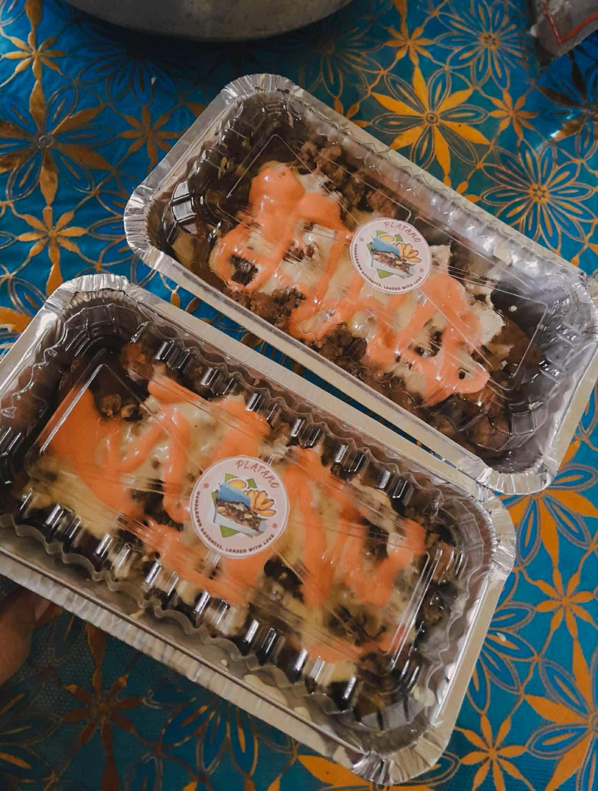

How Social Media Helps Small Businesses
Social media allows small businesses to promote their products, connect with customers, and reach more people.

Learn how social media can help small businesses reach more customers.
Social media allows small businesses to promote their products, connect with customers, and reach more people.

Social media helps small businesses promote their products, reach more customers, and communicate with people. Platforms like Facebook allow business owners to share pictures, updates, and information about their products.
Create a Facebook page where customers can see your products and learn about your business.
Share clear and attractive pictures of your products to get people's attention.
Reply to comments and messages to build good relationships with your customers.
Share updates regularly so people remember your business.
During our Grade 12 school activity, our group experienced selling food products as a small business. We used Facebook to post pictures of our products and attract potential customers. Through social media, we were able to reach people and gain attention for our products.
This experience taught us that social media can help small businesses promote their products and connect with customers.
Social media is a useful tool for small businesses because it helps promote products, reach customers, and build connections. Even small businesses can use platforms like Facebook to introduce their products to more people.